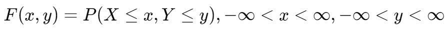
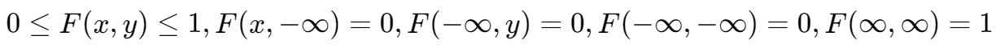
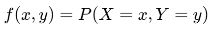
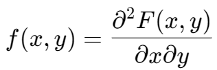
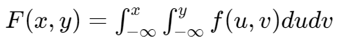
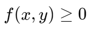
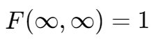
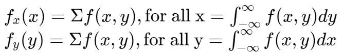
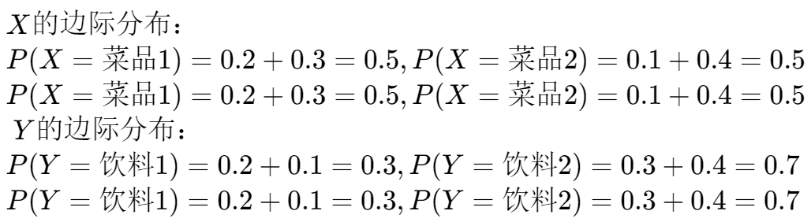
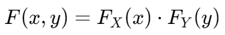

多变量的概率分布
本文以双变量为例，说明多变量的概率分布的计算。
联合分布函数,,
对于两随机变量 X 和 Y，有联合分布函数：

性质：
- 对于 X 和 Y 非递减
- 
- 对 X 和 Y 有右连续性
联合概率质量函数,,
对于两离散随机变量 X 和 Y，有联合概率质量函数：

联合概率密度函数,,
对于两连续随机变量 X 和 Y，有联合概率密度函数：

反过来，联合分布函数是联合概率密度函数的重积分：

性质：
- 
- 
边缘分布,,
对于多个随机变量，边缘分布可以看作是从联合分布中“整合掉”其他随机变量后的单变量分布。

| X / Y | 饮料1 | 饮料2 |
|---|---|---|
| 菜品1 | 0.2 | 0.3 |
| 菜品2 | 0.1 | 0.4 |

边缘分布使用
联合分布函数和边缘分布的关联
当两变量 X 和 Y 相互独立时，
